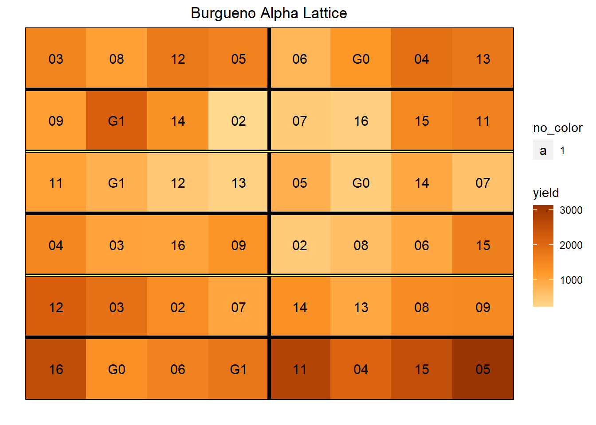

Section 7 Other Models
library(agridat); library(desplot)
library(dplyr)
library(nlme)
library(lme4)Spatial models can easily be extended to fit other experimental designs such as alpha lattice and split plot, and traits with non-Gaussian distribution that are modeled using a generalized linear model.
7.1 Other Experimental Designs
7.1.1 2+ Factorials (RCBD)
data(chinloy.fractionalfactorial)7.1.2 Alpha lattice
data(burgueno.alpha)
m0 <- lmer(yield ~ gen + (1|rep/block), data=burgueno.alpha)7.1.3 Latin square
Latin is a special example of a lattice experiment where each treatment occurs in each row and in each column. As a result, the row and column effects can be modeled using balanced data.
The “cochran.latin” data set from the package ‘Agridat’:
data(cochran.latin)
head(cochran.latin)## row col operator diff
## 1 1 1 f 3.5
## 2 1 2 b 4.2
## 3 1 3 a 6.7
## 4 1 4 d 6.6
## 5 1 5 c 4.1
## 6 1 6 e 3.8hist(cochran.latin$diff)
desplot(cochran.latin, diff~col*row,
text=operator, cex=1,
main="cochran.latin")
cochran.latin <- mutate(cochran.latin,
rowf = as.factor(row), colf = as.factor(col))
cochran.latin_lme1 <- lm(diff ~ operator + colf + rowf,
data = cochran.latin)7.1.4 Augmented
lind <- read.csv("data/AB19F5_LIND.csv")7.1.5 Split plot
#library(agridat): data(durban.splitplot)7.1.6 Split-split plot
data(archbold.apple)
#m1 <- lmer(yield ~ -1 + trt + (1|rep/mp/sp), archbold.apple)7.1.7 Split block
also, over-dispersed count data
data(beal.webworms) ## Warning in data(beal.webworms): data set 'beal.webworms' not found7.2 Traits with non-gaussian distributions
7.2.1 Count traits:
Count traits are discrete rather than continuous and often follow a poisson distribution or in the case of over-dispersed data, a negative binomial distribution.
Here is a data set of wireworms counts after a fumigation treatment.
data(cochran.wireworms)
stem(cochran.wireworms$worms)##
## The decimal point is 1 digit(s) to the right of the |
##
## 0 | 00112234444444
## 0 | 5566688899
## 1 |
## 1 | 7There are 5 treatment levels, “K,” “M,” “N,” “O,” and “P,” and 5 replicates. It is arranged in a latin square experimental design.
desplot(cochran.wireworms, worms ~ col*row,
text=trt, cex=1,
main="cochran wireworms")
7.2.2 Percent traits
(e.g. percent germination, percent infection, percent survival) bounded between 0 and 100
# having a hard time finding a data set7.2.3 Ordinal traits
(e.g. disease scores)
data(lee.potatoblight)7.2.4 Binomial traits
(e.g. )
data(gotway.hessianfly)